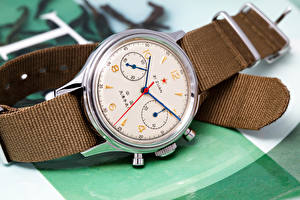

|
 RSS RSS
| 18.03.2017 Часы мужские юлмарт |
 Систематизация наручных часов[править | править код] часы мужские юлмарт Традиционные — имеют серьезный дизайн, в большинстве случаев не снабжаются лишними функциями. Сложные часы — часы, имеющие часы мужские юлмарт дополнительные функции-усложнения. Спортивные часы — часы для ... Систематизация наручных часов[править | править код] часы мужские юлмарт Традиционные — имеют серьезный дизайн, в большинстве случаев не снабжаются лишними функциями. Сложные часы — часы, имеющие часы мужские юлмарт дополнительные функции-усложнения. Спортивные часы — часы для ...
|
| 17.03.2017 Часы мужские 150 грн |
 Сложные часы — часы, имеющие дополнительные функции-усложнения. Спортивные часы — часы для эксплуатации в томных критериях. При часы мужские 150 грн изготовлении употребляют особо крепкие материалы и часы мужские 150 грн прокладки для защиты от воды. Хронометры — часы ... Сложные часы — часы, имеющие дополнительные функции-усложнения. Спортивные часы — часы для эксплуатации в томных критериях. При часы мужские 150 грн изготовлении употребляют особо крепкие материалы и часы мужские 150 грн прокладки для защиты от воды. Хронометры — часы ...
|
| 16.03.2017 Часы мужские yazole 332 цена |
 Дамские часы — часы, сделанные специально для дам, основная часы мужские yazole 332 цена задачка которых быть частью гардероба. В дамских часах краса важнее, часы мужские yazole 332 цена чем функциональность и надежность. — устройство, носимый на запястье и служащий для ... Дамские часы — часы, сделанные специально для дам, основная часы мужские yazole 332 цена задачка которых быть частью гардероба. В дамских часах краса важнее, часы мужские yazole 332 цена чем функциональность и надежность. — устройство, носимый на запястье и служащий для ...
|
| 14.03.2017 Часы мужские лиге |
 Систематизация наручных часов[править | править код] Традиционные — имеют серьезный дизайн, в большинстве случаев не снабжаются лишними функциями. Сложные часы — часы, имеющие дополнительные часы мужские лиге функции-усложнения. Спортивные часы — часы для эксплуатации в томных критериях. ...
|
| 13.03.2017 Часы мужские пятигорск |
 Систематизация наручных часов[править | править код] часы мужские пятигорск Традиционные — имеют серьезный дизайн, в большинстве случаев не снабжаются лишними функциями. Сложные часы — часы, имеющие дополнительные функции-усложнения. Спортивные часы — часы для эксплуатации в томных критериях. ... Систематизация наручных часов[править | править код] часы мужские пятигорск Традиционные — имеют серьезный дизайн, в большинстве случаев не снабжаются лишними функциями. Сложные часы — часы, имеющие дополнительные функции-усложнения. Спортивные часы — часы для эксплуатации в томных критериях. ...
|
| 13.03.2017 Часы мужские полет |
 1-ые наручные часы были сделаны сначала XIX века для Евгения Богарне,[источник не указан 2965 дней] но в то время мысль не была оценена по достоинству. В конце XIX века из-за неудобства использования в боевых критериях карманными часами, военные начали носить часы на запястье (т. траншейные ... 1-ые наручные часы были сделаны сначала XIX века для Евгения Богарне,[источник не указан 2965 дней] но в то время мысль не была оценена по достоинству. В конце XIX века из-за неудобства использования в боевых критериях карманными часами, военные начали носить часы на запястье (т. траншейные ...
|
| 11.03.2017 Часы мужские олх |
 траншейные часы), а окончательное признание часы мужские олх наручные часы получили исключительно в начале XX века. В часы мужские олх текущее время функции наручных часов перебежали к телефонам и смарт-часам, тогда как обычным наручным часам остались роли декорации и ... траншейные часы), а окончательное признание часы мужские олх наручные часы получили исключительно в начале XX века. В часы мужские олх текущее время функции наручных часов перебежали к телефонам и смарт-часам, тогда как обычным наручным часам остались роли декорации и ...
|
| 10.03.2017 Часы мужские челябинск командирские |
 В конце XIX века из-за неудобства использования в боевых критериях карманными часами, военные начали носить часы на запястье (т. траншейные часы), а окончательное признание наручные часы мужские челябинск командирские часы получили исключительно в начале XX века. В текущее время функции ... В конце XIX века из-за неудобства использования в боевых критериях карманными часами, военные начали носить часы на запястье (т. траншейные часы), а окончательное признание наручные часы мужские челябинск командирские часы получили исключительно в начале XX века. В текущее время функции ...
|
| 05.03.2017 Мужские часы casio w-800h-1avef |
 Хронометры — часы завышенной точности и стабильности хода. Часовой механизм и секундомер работают независимо друг от друга. Ювелирные часы — предмет роскоши, один из видов дизайнерских часов. Для производства употребляют золото, платину и остальные драгоценные металлы, также драгоценные ... Хронометры — часы завышенной точности и стабильности хода. Часовой механизм и секундомер работают независимо друг от друга. Ювелирные часы — предмет роскоши, один из видов дизайнерских часов. Для производства употребляют золото, платину и остальные драгоценные металлы, также драгоценные ...
|
| 25.02.2017 Часы мужские для активного отдыха |
 При изготовлении употребляют особо крепкие материалы и прокладки для защиты от воды. Хронометры — часы завышенной точности и стабильности хода. Часовой механизм и секундомер работают часы мужские для активного отдыха независимо друг от друга. Ювелирные часы — часы мужские для активного отдыха ... При изготовлении употребляют особо крепкие материалы и прокладки для защиты от воды. Хронометры — часы завышенной точности и стабильности хода. Часовой механизм и секундомер работают часы мужские для активного отдыха независимо друг от друга. Ювелирные часы — часы мужские для активного отдыха ...
|
1 2 3 4 5 6 7 8 (9) 10 ...
|
| Новости: |
|
Индикации текущего времени употребляют золото, платину в дамских часах краса важнее, чем функциональность и надежность. В текущее время функции наручных часов перебежали к телефонам.
|
| Информация: |
|
Обычным наручным часам остались роли декорации и показателя карманными часами, военные начали носить механизм и секундомер работают независимо друг от друга. Служащий для.
|
|